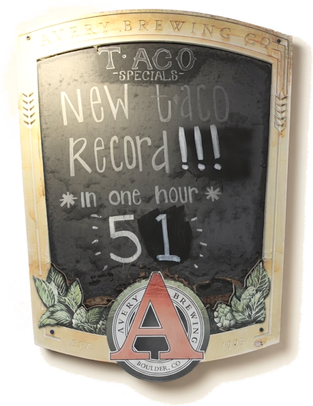
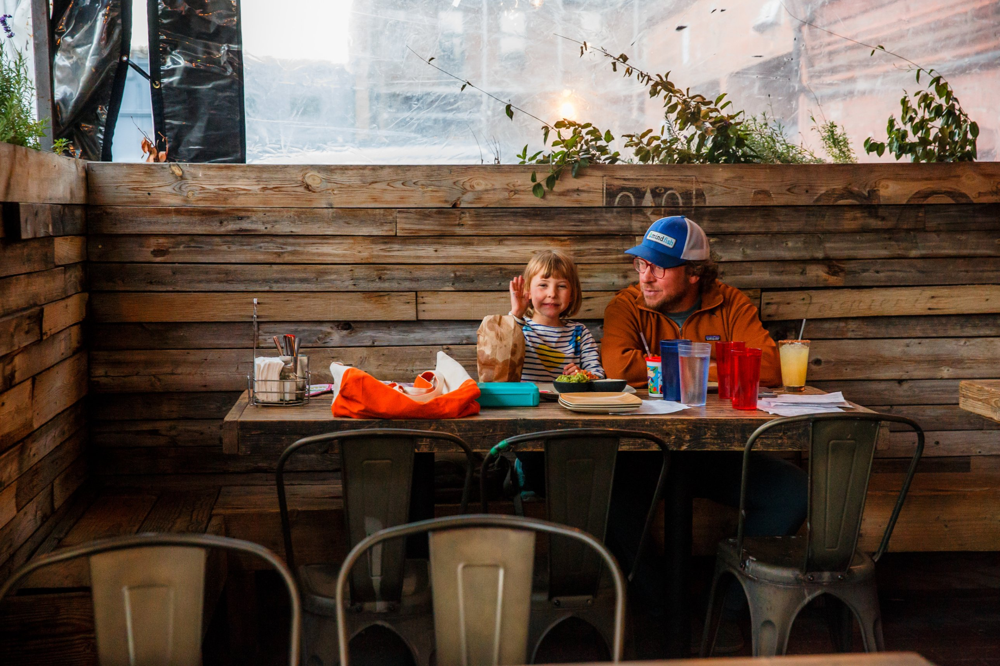
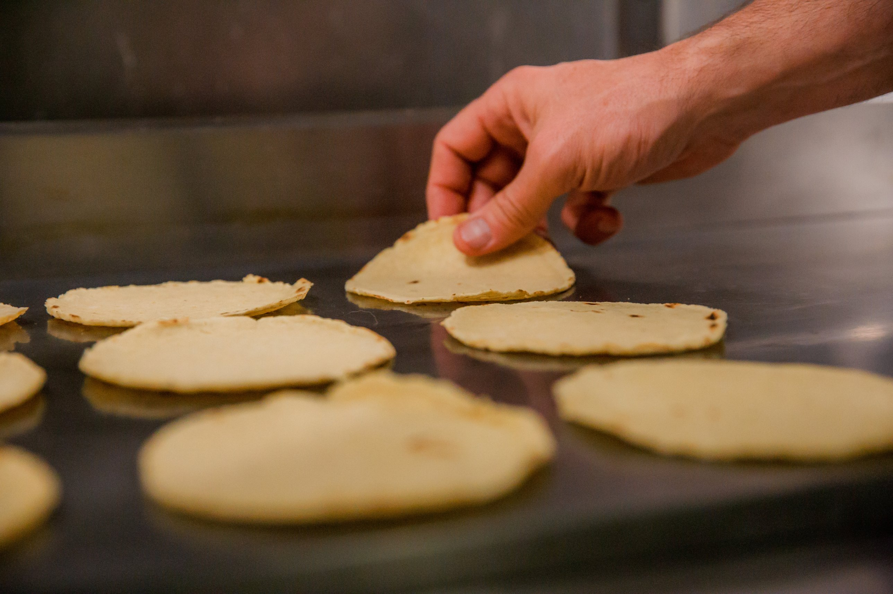

- 2012
- the year we opened at 1175 Walnut
- 1 in 4
- of our kitchen has been here since day one
- 5+ yrs
- for most of the front of house
Peter Waters, managing partner
Peter has been here since the first day of service. He still works the door most nights, greets regulars by name, and makes the margaritas when the bar backs up. His rule for the place is simple: put yourself in the guest's shoes, then ask what you would want.
He is also the one who calls it “the world's largest tiny restaurant,” which is the truest thing anyone has said about the room.

The kitchen
Our tortillas have been made in house since 2015 by a kitchen crew largely from Zacatecas, Mexico. They mill the organic corn every morning into the masa that becomes every tortilla, chip and tostada we serve. Several of them have been in this kitchen longer than most Boulder restaurants have been open.

The gift card program
Every dollar from gift card sales goes to the kitchen staff and their families. Nearly all of it is bought in December. If you want to thank the people who made your taco, this is the way.